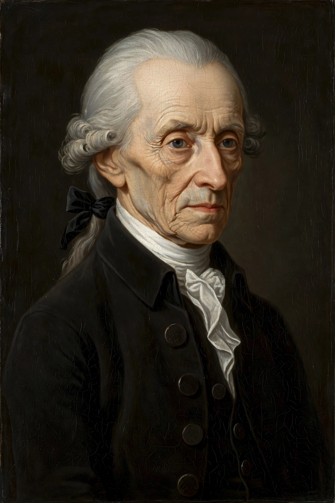

From Wikipedia, the free encyclopedia
| Immanuel Kant | |
|---|---|
| Born | 22 April 1724, Königsberg, Prussia |
| Died | 12 February 1804, Königsberg |
| Era | 18th-century philosophy |
| Main interests | Epistemology, metaphysics, ethics, aesthetics |
| Notable works | Critique of Pure Reason (1781); Groundwork (1785) |
| Notable ideas | Categorical imperative; transcendental idealism; synthetic a priori |

Immanuel Kant (1724–1804) was a German philosopher from Königsberg in Prussia and a central figure of the Enlightenment. His Critique of Pure Reason (1781) argued that human knowledge arises from the cooperation of sense experience with concepts the mind itself supplies — a self-described 'Copernican revolution' in philosophy. In ethics he grounded morality in the categorical imperative: act only on maxims you can will as universal law, and treat humanity always also as an end.
Kant spent his whole life in and around Königsberg, teaching at its university and becoming known for a routine so regular that neighbours reputedly set their watches by his afternoon walk. After a decade of silence, the first Critique appeared in 1781, followed by the Groundwork of the Metaphysics of Morals (1785), the Critique of Practical Reason (1788) and the Critique of Judgment (1790). He also wrote on perpetual peace, history, religion and anthropology.
Kant distinguished phenomena (things as they appear under the forms of space, time and the categories) from noumena (things in themselves), which we cannot know. Judgements can be analytic or synthetic, a priori or a posteriori; his great question was how synthetic a priori knowledge — as in mathematics and natural science — is possible. His ethics makes autonomy and duty the basis of moral worth, and his aesthetics analysed beauty and the sublime. Kant's influence runs through virtually all subsequent Western philosophy, from German idealism to contemporary analytic and continental thought.
Epistemology, Metaphysics, Aesthetics, Enlightenment, Categorical imperative